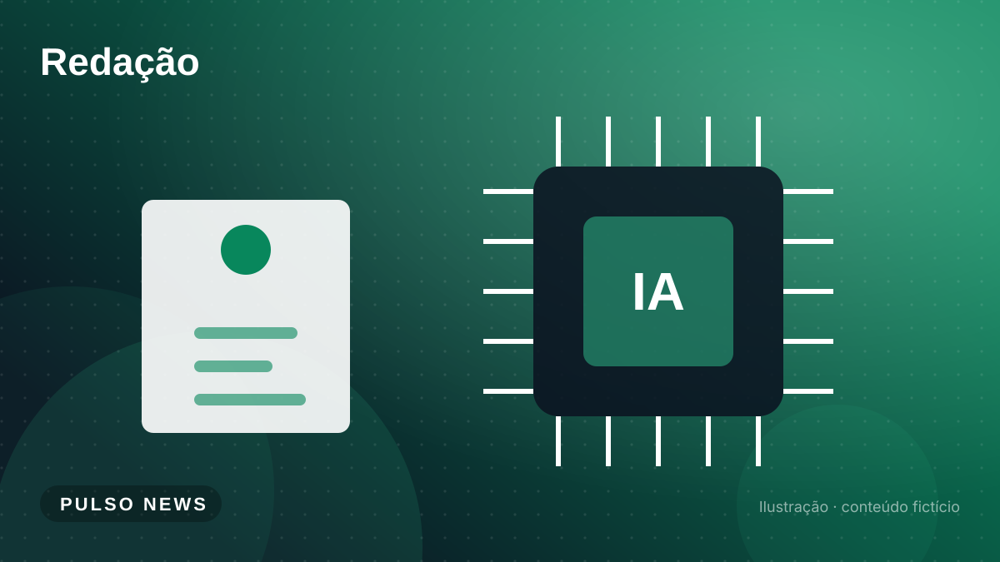
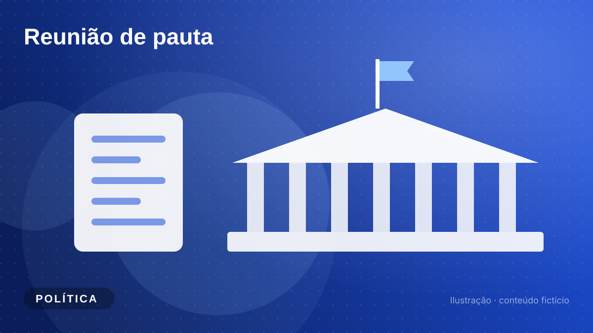
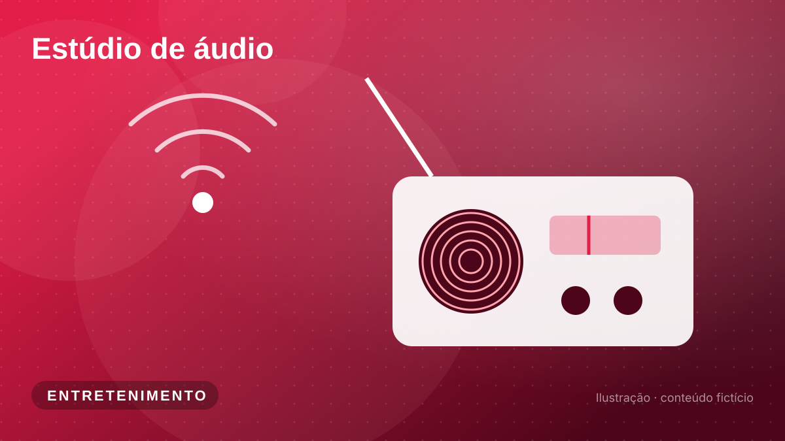
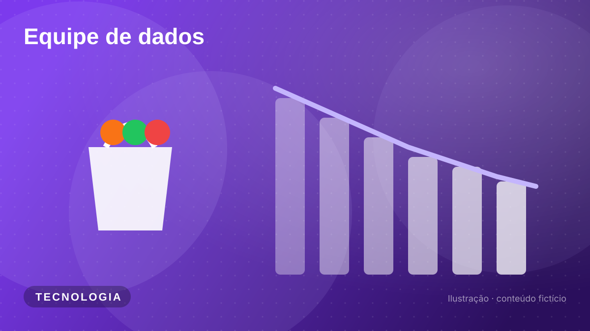
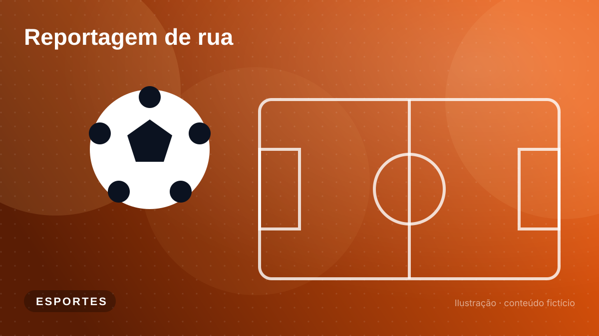
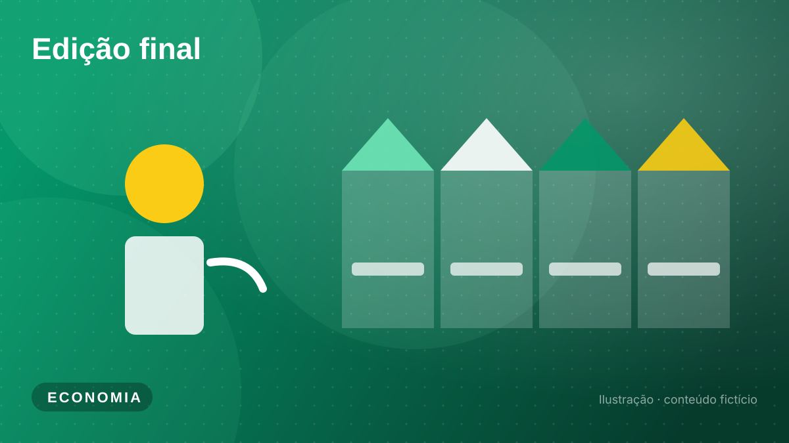
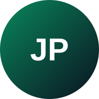
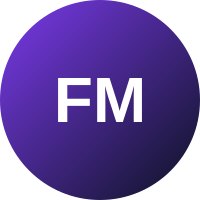

Rapidez
Resumos que podem ser lidos em poucos minutos, sem perder o essencial.
Um portal de notícias acadêmico que combina design moderno, leitura confortável e informação organizada por editorias.
Esta página usa somente HTML, CSS e JavaScript purosO Pulso News foi criado na disciplina Desenvolvimento Front-End para Web da Universidade Positivo. A ideia é simples: entregar o essencial do dia em textos curtos, com manchetes claras e navegação rápida por categorias.
O visual foi inspirado na organização e nos botões arredondados da Hashtag Treinamentos, enquanto a forma de apresentar as notícias se inspira no The News, que resume os fatos de forma direta.
Importante: todas as notícias deste portal são fictícias e foram escritas apenas para fins didáticos.
Resumos que podem ser lidos em poucos minutos, sem perder o essencial.
Linguagem simples, títulos objetivos e organização por editorias.
Contraste adequado, textos alternativos e navegação pelo teclado.
Layout que se adapta ao celular, ao tablet e ao computador.







Estudante de Análise e Desenvolvimento de Sistemas na Universidade Positivo.

Estudante de Análise e Desenvolvimento de Sistemas na Universidade Positivo.
Não. Todas as notícias, nomes de times e indicadores são fictícios e foram criados apenas para o projeto.
No localStorage do seu navegador. Eles continuam lá mesmo depois de fechar a página, mas não são enviados para nenhum servidor.
Sim. Fontes, imagens, vídeo, áudio e o Bootstrap estão dentro da pasta do projeto. Basta abrir o arquivo index.html.
Para cumprir o requisito do professor de ter pelo menos duas páginas feitas só com HTML, CSS e JavaScript puros. A outra é a página de leitura da notícia.